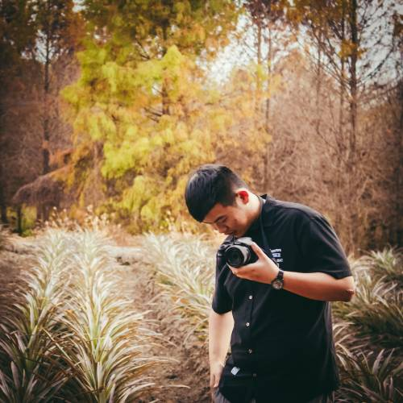
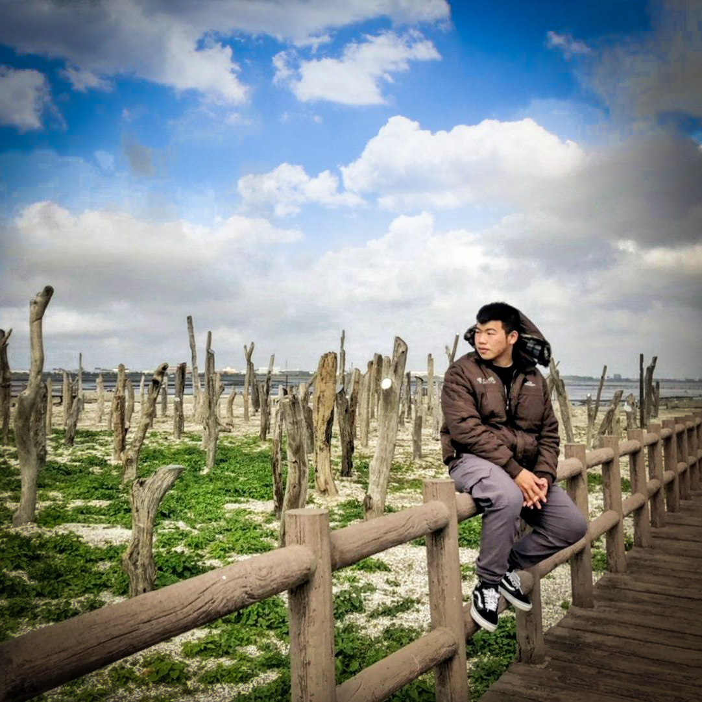
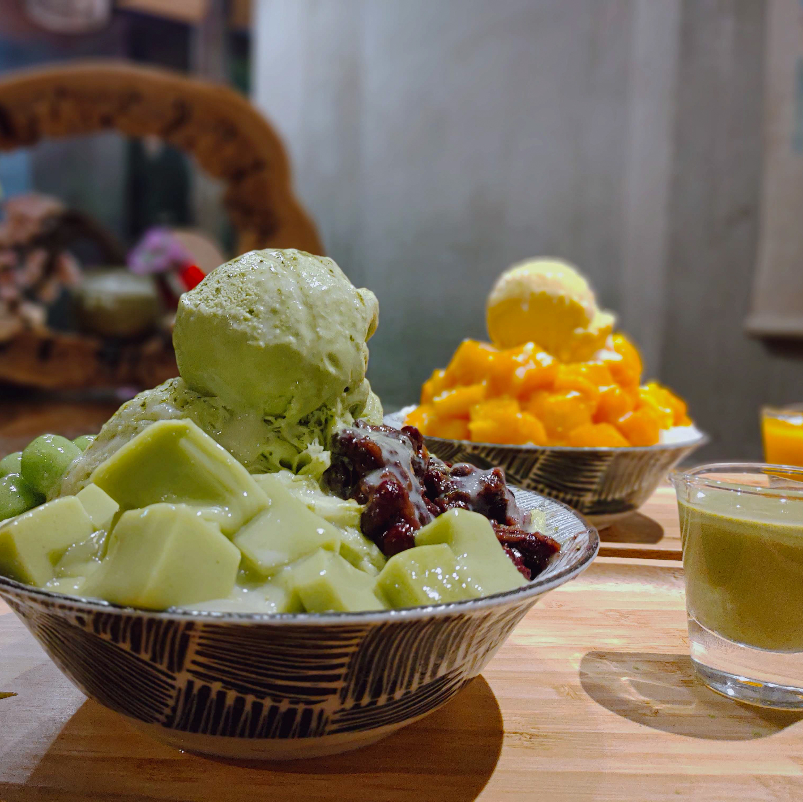
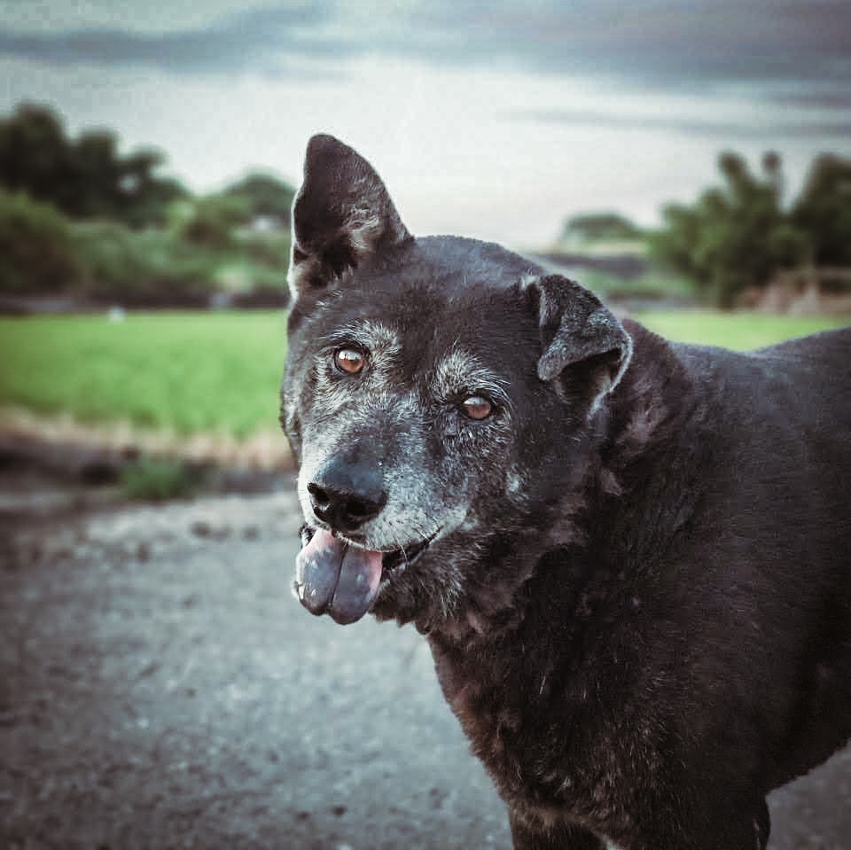

ABOUT ME
我是一位來自雲林的鄉下小孩，父母也從事農業相關的工作，所以工作比較有季節性，因此父母時常有比較閒暇的時間，而空閒的時間也時常帶我們到去遊山玩水，上大學之後，我也時常搭車返鄉回雲林與家人一同出遊，也會與家裡的三隻愛犬互動，就這樣，我也開始喜歡記錄旅遊點滴，捕捉精采的畫面，也在這之中更精進自己的拍照技術。

攝影
不需要專業的單眼相機，手機也能拍出最美的畫面，攝影與拍攝的器材無關，而是關於器材後面的那顆腦袋。

旅遊
回憶是最美的溫存，因此在旅遊之中，也開始隨手拿起手機紀錄起這最美的溫存，捕捉最精采動容的時刻。

美食
民以食為天，美食是人們生活中不可或缺的一部分，分享香甜可口的感動，是人們享受美食之餘莫大的幸福。

小黑
家中年紀最長，卻也是最狀最健康的狗，年輕時脾氣凶狠，一言不合就開咬，年紀逐漸增長，牙齒也不如過往了。

嗚嗚
家中第二年長的狗，是一隻憨呆萌的狗，也因為體重過重，導致膝蓋負重過大，老狗病的問題也逐漸浮出。

小噗
一隻最有活力的狗，活力展現於與其他狗競爭食物的時候，非常的貪吃，不論肚子多麼飽，東西還是照樣進食。